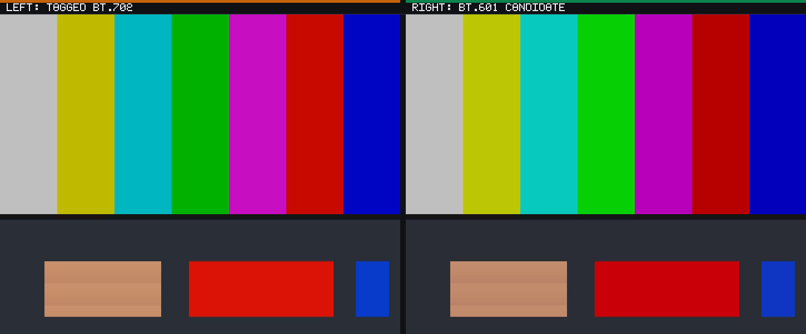

720×576 矩阵标签核查
联合使用彩条结构、双矩阵残差和容器声明。接近的残差不会被强制判为 Rec.601，而是保留候选。生成于 2026-11-26T20:24:41Z。
ambiguous-601-709.mp4
证据接近，保留候选
声明: bt709
720×576
h264
扫描帧: 4
| 候选矩阵 | 色条模板 | 残差 | 覆盖率 | 结构命中 |
|---|---|---|---|---|
| bt601 | 75% | 0.0293 | 100% | 100% |
| bt709 | 75% | 0.0263 | 100% | 100% |
| 证据 | 观察 | 作用 |
|---|---|---|
| color_bars | found=true at 0.000s, y=4, templates=75%/75%, coverage=100%/100% | establishes that a structured reference pattern is present; it does not by itself choose a matrix |
| matrix_residual | BT.601=0.0293, BT.709=0.0263, delta=-0.0030 | compares each candidate decode against the same measured bar patches |
| container_declaration | bt709 (bt709) | is treated as prior metadata, not as ground truth; a strong residual conflict can overturn it |

